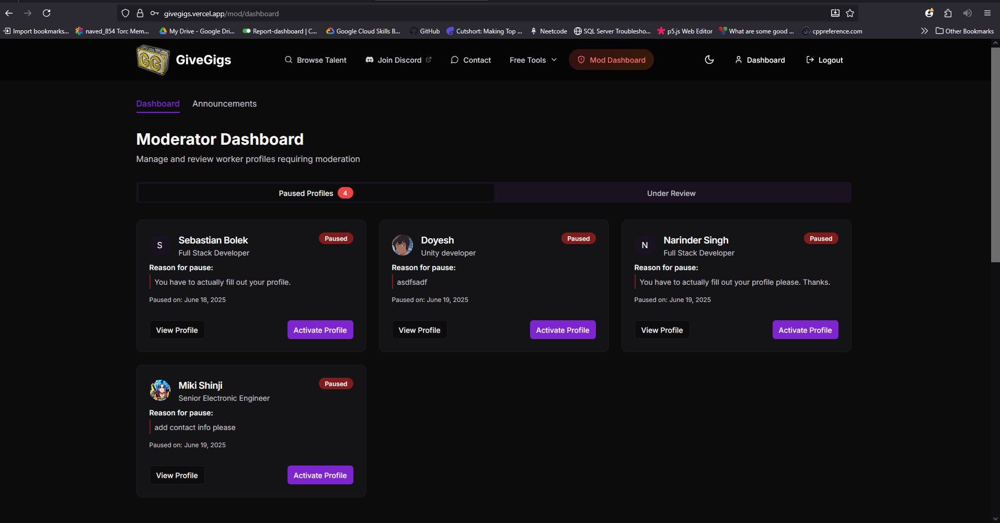
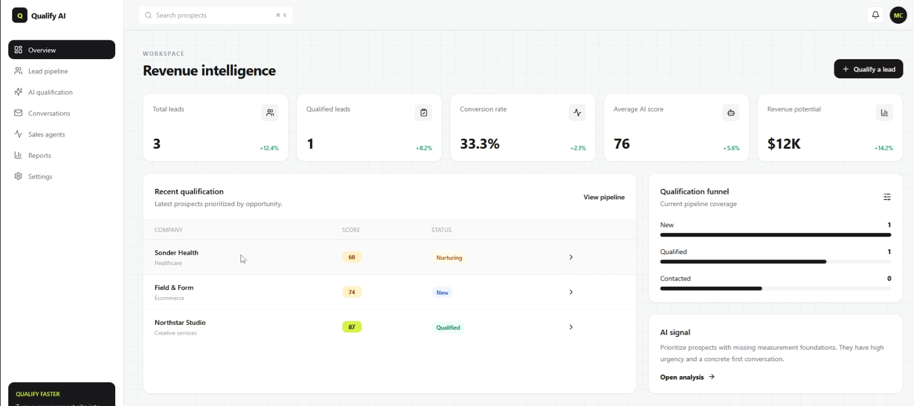
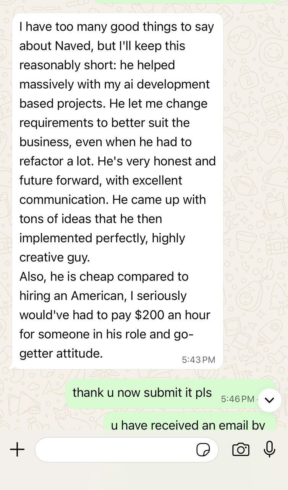

Shape the idea
Gather requirements, challenge assumptions, and define the smallest valuable product.
Founding Product Engineer
I work directly with founders to take SaaS products from idea → architecture → MVP → production. I also help growing and local businesses win more customers and reduce manual work with high-converting websites, internal tools, and AI-powered workflows.
How I turn uncertainty into momentum
A founder-friendly process that combines market context, product judgment, and hands-on engineering.
Gather requirements, challenge assumptions, and define the smallest valuable product.
Map competitors, identify underserved needs, and turn insights into differentiated features.
Design the architecture and database, then ship the frontend, backend, and AI workflows.
Use feedback to improve the experience, prioritize the next bet, and keep raising the bar.
A selection of work that highlights problem‑solving, execution speed, and quality.





End-to-end ownership
I am comfortable owning the difficult middle between an idea and a product that is ready to grow.
I’m Naved, an AI-native Product Engineer who is comfortable taking ownership from requirements gathering through architecture, implementation, deployment, and iteration. I work directly with founders, lead small teams when needed, and ship AI-powered SaaS products quickly.
DebateDash reflects that approach: I partnered with the founder on requirements, feature ideas, architecture, database design, full-stack delivery, AI integration, team and QA coordination, documentation, and monetization conversations.
